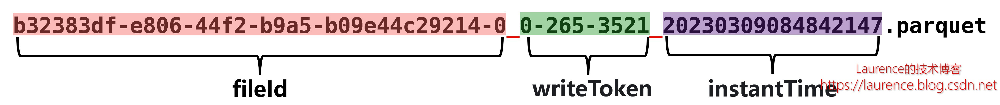
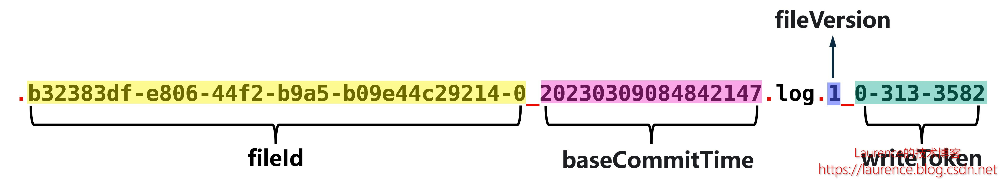
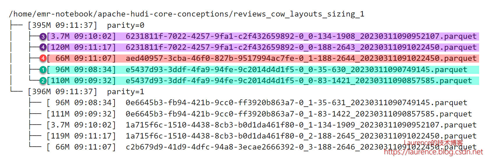
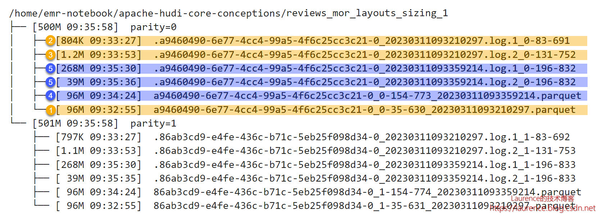

探索 Apache Hudi 核心概念 (1) - File Layouts ( 文件布局 )
在以往众多介绍Apcache Hudi的文章中，对核心概念的解读大多会引用官方文档中的概念图，像Timeline（时间线）、 File Layouts（文件布局）这类结构清晰，逻辑严谨的概念，图解是很好的说明方式。但是，抽象概念与实际运行状况还是有不少差异的，相信很多学习和使用Hudi的开发者都曾尝试过：将文档中的概念和Hudi的实际运行状况结合起来推导每个动作背后的逻辑是什么。这个过程非常有意义，因为它可以帮助我们透彻地理解Hudi的工作原理。
在这方面，Notebook是一个绝佳的工具，我们可以利用Notebook良好的交互能力，设计一系列有针对性的操作，让这些操作去触发Hudi的某些机制，然后观察Hudi数据集的状态（包括元数据和 存储 文件），再结合对Hudi相关概念的介绍，解读这些行为。利用Notebook提供的统一环境和上下文，我们可以非常生动地观察到Hudi的运行机制，并深刻体会到其背后的控制原理，这也正是本系列文章的写作灵感：我们希望借助Notebook“探索，发现，思考，领悟”的思维模式，带领大家开启一段Hudi核心概念的探索之旅。本文地址： https://laurence.enlightgram.com/hudi/hudi-core-concepts-1-file-layouts/ ，转载请注明出处！
1. Notebook 介绍
本系列文章配备一组专门开发的Notebook，文章的讲解与Notebook演示紧密结合，Notebook项目地址如下：
| 项目名称 | 项目地址 |
|---|---|
| Apache Hudi Core Conceptions | https://github.com/bluishglc/apache-hudi-core-conceptions |
Notebook的运行环境使用的是 Amazon EMR Studio（一种面向Amazon EMR的托管Notebook环境），如果您没有AWS账号，可以自行修改Notebook适配到任何支持Spark Kernel的Notebook环境中。Notebook还使用了一个公共数据集：Amazon Customer Reviews，它是Amazon购物网站上的用户评价数据，总体积50GB，存放在S3上，地址：s3://amazon-reviews-pds[1]，如果您没有AWS账号，可以通过S3 客户端工具 下载到本地使用。Notebook使用的Hudi版本是 0.12.1 ，Spark集群建议配置：32 vCore / 128 GB及以上。
为了更好地演示Hudi的特性，我们对原始数据做了一些必要的裁剪，并将裁剪工作封装成一个独立的Notebook： 《Apache Hudi Core Conceptions (1) - Data Preparation》 ，对应文件：1-data-preparation.ipynb，这个notebook主要完成两项工作：
-
使用Spark SQL创建外部表：all_reviews，location指向 s3://amazon-reviews-pds，便于通过数据表的形式读取原始数据
-
使用Spark SQL创建正式的源数据表：reviews，该表在all_reviews基础上做了如下裁剪：
-
为保证所有记录大小基本一致[2]，仅选取review_id, star_rating, review_body, review_date和year五个必要字段，同时将长短不一的review_id和review_body两个字段的值使用定长的uuid字符串替换
-
为便于按年份读取数据，用year重新进行了分区
-
其他的Notebook均以测试用例的形式组织，每个用例都会创建用例专属的数据表，并根据测试意图配置特定的Hudi属性。这些数据表的结构与数据准备时创建的revieiws表基本一致，只是多了Hudi需要的preCombineField列timestamp和为演示特别设计的分区列parity。parity是基于review_id的crc32编码对2取余后得到的数值0或1，设计该列作为分区列的考量是：保证测试表即不会没有分区，这样说明性会不足，又不会有太多分区，这样会干扰解读，所以使用这种只有0、1两种取值的列作分区是非常适合的。
提示：运行任何Notebook前，请先至少执行一次 《Apache Hudi Core Conceptions (1) - Data Preparation》 ，以确保源数据表reviews被创建。所有Notebook都定义了一个环境变量： S3_BUCKET ，需要您将其修改为自己的S3桶。
2. 运行 Notebook
本文会使用到两个Notebook： 《Apache Hudi Core Conceptions (2) - COW: File Layouts & File Sizing》 和 《Apache Hudi Core Conceptions (3) - MOR: File Layouts & File Sizing》 ，对应文件分别是：2-cow-file-layouts-file-sizing.ipynb 和 3-mor-file-layouts-file-sizing.ipynb。运行前，请先修改Notebook中的环境变量 S3_BUCKET ，将其设为您自己的S3桶，并确保用于数据准备的Notebook： 《Apache Hudi Core Conceptions (1) - Data Preparation》 已经至少执行过一次。本文，我们只关注两个Notebook中和COW表以及MOR表文件布局有关的内容，对于运行过程中发生的File Sizing和Compaction动作会在后续文章中专门解读。
3. 核心概念
File Layouts（文件布局）是指Hudi的 数据文件 在存储介质上的分布，Hudi会严格管理数据文件的命名、大小和存放位置，并会在适当时机新建、合并或分裂数据文件，这些逻辑都会体现在文件布局上。
Hudi在文件操作上有一个重要“原则”：Hudi always creates immutable files on disk。 即：文件一旦创建，永远不会再更新，任何添加、修改或删除操作只会在现有文件数据的基础上 合并 输入数据一起写入到下一个新文件中，清楚这一点对我们解读文件布局很有帮助。
整体上，Hudi文件布局的顶层结构是数据表对应的base目录，下一层是各分区目录，分区目录可根据分区列数量嵌套多层，这和Hive/Spark的表结构是一致的。在最底层分区文件夹上，Hudi不再创建子文件夹，全部都是平铺的数据文件，但是这些文件在逻辑上依然有着清晰的层级关系。顶层的文件集合是File Group，File Group下面是File Slice，File Slice下面就是具体的数据文件了。我们反过来，按从下到上的顺序梳理一下这些文件和文件集合：
- Base File
Base File是存储Hudi数据集的主体文件，以Parquet等列式格式存储，所以我们在Hudi中看到的Parquet文件基本都是Base File。实际上，Base File的命名是为了呼应 Log File，在没有Log File的COW表里，Base File就是基层的数据存储文件，没必要强调它的“Base”身份，直接叫Parquet文件就可以。Base File遵循一致的命名规范，格式为：
1 | <fileId>_<writeToken>_<instantTime>.parquet |
以下是一个真实的Base File文件名：

fileId部分是一个uuid，我们会在多个文件中看到相同的fileId，这些fileId相同的文件就组成了一个File Group。instantTime是写入这个文件对应的instant的时间，也是该文件的一个“版本”标注，因为一个Base File历经多轮增删改操作后就会产生多个版本，Hudi就使用instantTime对它们进行标识。不管是MOR表还是COW表，都有Base File，只是在COW表里只有Base File，在MOR表里除了Base File还有Log File。
- Log File
Log File是在MOR表中用于存储变化数据的文件，也常被称作 Delta Log，Log File不会独立存在，一定会从属于某个Parquet格式的Base File，一个Base File和它从属的若干Log File所构成的就是一个File Slice。Log File也遵循一致的命名规范，格式为：
1 | .<fileId>_<baseCommitTime>.log.<fileVersion>_<writeToken> |
以下是一个真实的Log File文件名：

不同于Base File，Log File文件名中时间戳部分并不是Log File自己对应的instanceTime，而是它所从属的Base File的instanceTime，即baseCommitTime。如此一来，就没有办法通过时间戳来区分Log File提交的先后顺序了，所以Hudi在Log File文件名中加入了fileVersion，它是一个从1开始单调递增的序列号，用于标识Log File产生的顺序。
- File Slice
在MOR表里，由一个Base File和若干从属于它的Log File组成的文件集合被称为一个File Slice。应该说File Slice是针对MOR表的特定概念，对于COW表来说，由于它不生成Log File，所以File Silce只包含Base File，或者说每一个Base File就是一个独立的File Silce。总之，对于COW表来说没有必要区分File Silce，也不没必要强调Base File的“Base”身份，只是为了概念对齐，大家会统一约定Hudi文件的三层逻辑布局为：File Group -> File Slice -> Base / Log Files。
- File Group
在前面介绍Base File时，我们已经提到了File Group，简单说，就是fileId相同的文件属于同一个File Group。同一File Group下往往有多个不同版本（instantTime）的Base File（针对COW表）或Base File + Log File的组合（针对MOR表），当File Group内最新的Base File迭代到足够大（ >100MB）时，Hudi就不会在当前File Group上继续追加数据了，而是去创建新的File Group。
4. COW表的File Layouts
运行 《Apache Hudi Core Conceptions (2) - COW: File Layouts & File Sizing》 的第1个测试用例，可以在2.8节看到类似下图这样一个经由实际操作产生的COW表的文件布局：

图中：青色、紫色和红色标注的文件分属于三个File Group，因为它们开头的uuid是三个不同的值，从文件名尾部的instantTime可以推断它们被创建的先后时间。当前的文件布局是历经4次操作演进而来，以分区parity=0为例，时间线（Timeline）如下：
①：第1次插入96M数据，生成了第一个Parquet文件；
②：第2次插入14M数据，在Copy On Write机制运作下，插入的14M数据与原96M数据合并写入新的Parquet文件，大小110M，fileID不变；
③：第3次插入3.7M数据，由于现有Parquet文件已经超过了100M的阈值，被Hudi判定为大文件，故不再选择它进行Copy On Write操作，转而生成新的fileId，创建新的File Group，并将数据写入新File Group的Parquet文件中，大小3.7M；
④：第4次插入182M数据，现有3.7M的文件是一个小文件，Hudi会选择以该文件为基础，将其3.7M的数据和新插入数据一起合并写入新的Parquet文件，由于这次插入的数据量较大，写入文件的体积将会超过Hudi规定的单一Parquet文件的上限（120M），所以Hudi将182M中的116M与现有3.7M数据合并，写满一个Parquet文件（120M），同时创建第3个File Group，将另外66M数据写入第3个File Group下的Parquet文件中。注意：66M的文件使用红色标记，属于一个独立的File Group，但它却是第④次提交的产物，不存在第⑤次提交
关于整条时间线上发生的与File Sizing有关的细节我们会在后续文章中单独介绍，本文先聚焦文件布局本身。
5. MOR表的File Layouts
运行 《Apache Hudi Core Conceptions (3) - MOR: File Layouts & File Sizing》 的第1个测试用例后，可以在2.8节看到类似下图这样一个经由实际操作产生的MOR表的文件布局：

图中：单一分区下的所有文件属于一个File Group（uuid全部相同），黄色和蓝色标注的文件分属于两个不同的File Slice，其中两个Parquet文件是两个File Slice各自的Base File，它们各带两个Log File。当前的文件布局是历经4次操作（5次提交）演进而来，以分区parity=0为例，时间线（Timeline）如下：
①：第1次插入96M数据，生成了第一个Base File；
②：第2次更新了其中的一小部分数据，生成了从属于第一个Base File文件的第一个Log File，大小804K，fileVersion是1；
③：第3次又更新了其中的一小部分数据，生成了从属于第一个Base File文件的第二个Log File，大小1.2M，fileVersion是2；
④：由于该表启用了同步压缩（Inline Compaction），并将触发Compaction的deltacommits阈值设为了3，所以第3次提交后触发了同步的Compaction操作，Hudi将此前的Base File和两个Log File压缩成一个新的Base File，大小96M，fileId不变，这样就出现了第二个File Slice。每次Compaction都会进行一次独立的提交（即commit，非deltacommit），所以新Base File尾部的时间戳更新为Compaction这次提交对应的instantTime；
⑤：第4次更新（但却已是第5次提交）的数据量达到了307M，由于该测试表的Log File上限被设定为了250M，此次提交触发了Log File的分裂，Hudi将更新数据写入了两个Log File，一个268M，fileVersion是1；另一个39M，fileVersion是2
关于整条时间线上发生的与File Sizing和Compaction有关的细节我们会在后续文章中单独介绍，本文先聚焦文件布局本身。
关联阅读：
探索Apache Hudi核心概念 (1) - File Layouts
探索Apache Hudi核心概念 (2) - File Sizing
探索Apache Hudi核心概念 (3) - Compaction
探索Apache Hudi核心概念 (4) - Clustering
关于作者：Laurence Geng，架构师，著有 《大数据平台架构与原型实现：数据中台建设实战》 一书，多年IT系统开发和架构经验，对大数据、企业级应用架构、SaaS、分布式存储和领域驱动设计有丰富的实践经验，个人技术博客： https://laurence.enlightgram.com
该桶部署于AWS海外区，如果您持有AWS海外区账号可直接访问，如果您是AWS中国区用户或没有AWS账号，可以通过S3客户端工具将数据集下载至本地使用。关于该数据源的更多信息请参考： https://s3.amazonaws.com/amazon-reviews-pds/readme.html ↩︎
Hudi对文件进行分割时会根据此前提交的数据情况估算记录的平均大小，如果记录本身的大小不均，Hudi的估算就会出现较大的偏差，这会对我们的演示和解读造成干扰，关于此话题，本系列的第2篇文章会进行专门的讨论 ↩︎
探索 Apache Hudi 核心概念 (1) - File Layouts ( 文件布局 )
https://laurence.enlightgram.com/hudi/hudi-core-concepts-1-file-layouts/